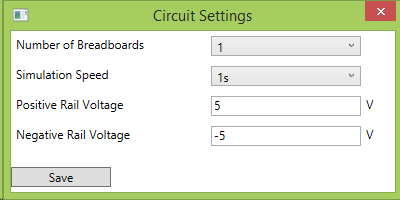
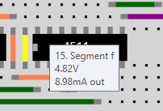
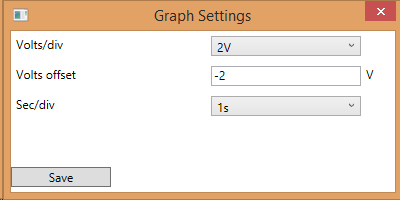

Advanced Features
This page is designed introduce you to some more of the features included in Breadboard Simulator.
Circuit Settings
The Circuit Settings dialog box enables you to set up various parameters relating to the circuit. To open it, click on the 'Gear' toolbar button ( or open the Circuit menu and click on Settings.
or open the Circuit menu and click on Settings.

- Number of Breadboards allows you to select the number of breadboards that are displayed for circuits to be built on, up to a maximum of 6.
- Simulation Speed sets the target number of simulation seconds per real second. Note that complex circuits may simulate slower than the set simulation speed.
- Positive Rail Voltage sets the voltage of that the positive (red colour) voltage rail.
- Negative Rail Voltage sets the voltage of that the negative (blue colour) voltage rail.
Note that the 0V rail (black) is fixed at 0V and cannot be changed.
Measuring Voltages and Currents
You can view the voltage or current of any component pin or wire during simulation. Just hover over the wire or pin and a box will appear with the voltage (for wires and pins) and current (for pins only); as well as the pin name and number for pins. An example is shown below:
Graph Settings
When viewing graph, you can click on the 'Settings' button to open a dialog box to set up the graph.

- Volts/div acts like the volts per division control on an oscilloscope. It sets the number of volts each square on the graph grid represents.
- Volts offset allows the traces to be shifted up or down. This value defaults to -2V, shifting the trace down to increase the room for positive voltages.
- Sec/div acts like the seconds per division control on an oscilloscope. It sets the number of seconds each square on the graph grid represents, and defaults to the current simulation speed. This means one grid square on the oscilloscope, by default, represents one real second.